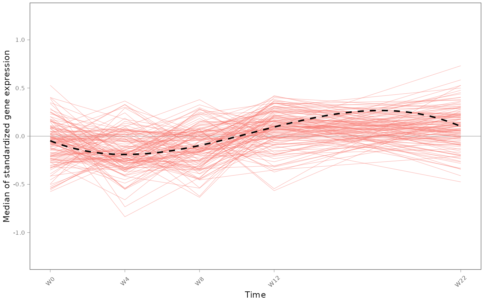
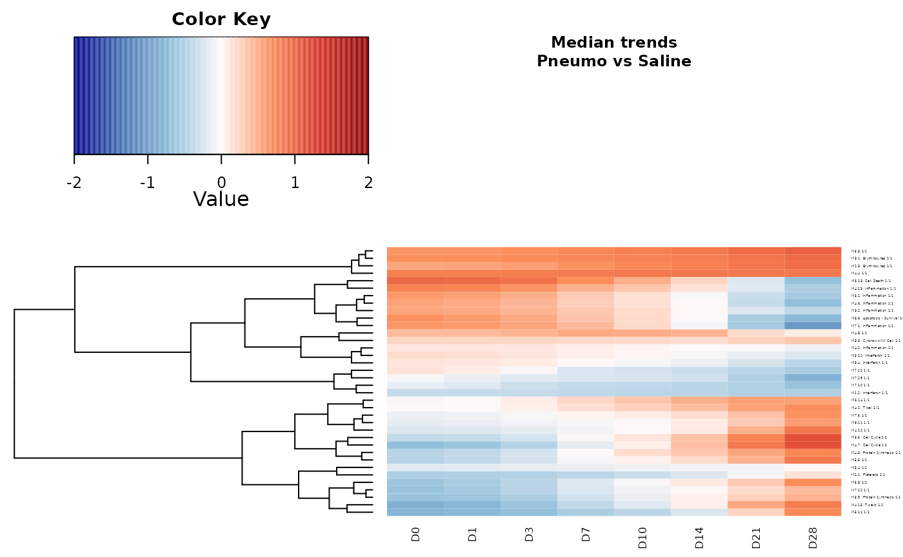

User guide to the `TcGSA` R package
Anthony Devaux, Boris Hejblum
2022-02-28
Source:vignettes/TcGSA_userguide.Rmd
TcGSA_userguide.RmdOverview of TcGSA
The TcGSA (Time-course Gene Set Analysis Hejblum et al., 2015) R package tests gene expression dynamics for significance in gene sets. A gene set is a group of genes, known a priori to share a common biological function or to be co-expressed. TcGSA relies on linear mixed model to take into account the potential heterogeneity of expression within a gene set. For more details, check the published article in PLOS Computational Biology.
Getting started using TcGSA
3 inputs are required to run TcGSA:
- The gene set object
- The gene expression matrix
- The design data matrix
Gene set object
A gene set is a group of genes either sharing the same biological function or . It enables to detect different gene expression and seems to be more powerful than a gene-by-gene analysis. Several definitions of groups have been made, in particular here we will focus on the following:
- Chaussabel’s modules (Chaussabel et al., 2008)
- Gene Ontology database (Ashburner et al., 2000)
- Kyoto Encyclopedia of Genes and Genomes database (Kanehisa et Goto, 2000)
The gene set object is a gmt format containing:
- the name of the gene set
- the description of the gene set, such as biological function
- the list of probes representing the genes inside each gene set
One can either use already existing gmt objects, or build their own.
Download gmts from Hejblum et al., 2015
To import the gmts used in Hejblum et al., 2015, one can download the supplementary file by running the following command:
temp <- tempfile()
utils::download.file("http://doi.org/10.1371/journal.pcbi.1004310.s007", destfile = temp, mode = "wb")
load(unz(temp, "ReproducibleRFiles/GMTs_PLOScb.RData", open = "r"))
unlink(temp)
rm(temp)It contains the 3 gene sets detailed above (for GO, it is only a subset of mutually exclusive gene sets with biological functions related to the immune system).
Disclaimer: be careful with the version of the gene set databases because they are probably outdated by now. To make sure to have the latest version of the database, you can (re-)build the gmt object yourself following the method below.
Self-built gmt
To self-build your gmt object, you have to prepare a .gmt file. This file format is the tab delimited file which can be created with this helpful website from the Broad Institute. In this file, one row represents one gene set with:
- Column 1: name of the gene set
- Column 2: description of the gene set
- Remaining columns: list of genes included in the gene set (represented by the probes)
Next, to import the .gmt file into R, you need to run the GSA.read.gmt() function from the GSA package. More details on the GSA help package.
Gene expression matrix
This matrix contains the gene expression (in cells) for each gene (in rows) of each sample (in columns) gathered from microarray measurements. The gene expression should already be normalized before using TcGSA. In the rownames, the name of each probe/gene must match with the name of probes/genes in the gmt object.
Design data matrix
The design data matrix contains for each sample (in row), several variables (in column). The variables required for the matrix are:
- Sample names
- Patient identifiers
- Time measurements
- In case of multiple treatments, the name of treatment
Name of samples should be unique and match with the samples of gene expression matrix with the same order.
How to use TcGSA for one treatment group ?
Data preparation
This example comes from Hejblum et al., 2015 and DALIA-1 HIV therapeutic vaccine trial. The aim of this study is to evaluate the immune response to HIV vaccine. To conduct this study, 19 patients contaminated by the HIV have been followed for 48 weeks split into 2 phases of 24 each:
- 1st phase from week 0 to week 24 (before treatment interruption): the patients were under anti-retroviral treatment and received trial vaccine on week 0, 4, 8 and 12.
- 2nd phase from week 24 to week 48 (after treatment interruption): for the follow-up of patients, none of trial vaccine has been injected and anti-retroviral treatments have been interrupted (except for health problems).
Blood samples have been collected at each of the different measurement time points, for each subject, to study the dynamic of gene expression over time. For more details, check the article from Hejblum et al. here.
The data are publicly available on GEO website with GEO access number ‘GSE46734’. We will be using the GEOquery package to get the data files from GEO website (see appendix for more details on GEOquery)
Import of data files
In this example, we need import the supplementary files available on GEOwith the getGEOSuppFiles function (we only need the three following files, hence the regular expression filter: gene expression pre-ATI, gene expression post-ATI, experimental design):
GEOquery::getGEOSuppFiles('GSE46734', filter_regex="(*NonParamCombat*)|(*DESIGN*)")Design data matrix
The design data matrix (called design_preATI) is extracted from one of the GEO supplementary files. It contains the needed experimental variables, plus some additional information regarding this study. Some data processing is performed made according to the source of this paper.
design <- read.delim(gzfile("GSE46734/GSE46734_DALIA1longitudinalTranscriptome_DESIGN_anonym.txt.gz"))
design_preATI <- design[-which(design$TimePoint<0 | design$TimePoint==16 | design$TimePoint>22), ]
head(design_preATI,5)
#> Sample_name Chip_ID HYB_Chamber HYB_Day Patient_ID TimePoint
#> 1 X6116733008_L C4 CH1 D1 P001 4
#> 3 X6116733022_E C13 CH4 D1 P001 22
#> 5 X6116733029_A C18 CH1 D2 P001 8
#> 6 X6116733068_L C25 CH3 D2 P001 12
#> 8 X6116733073_K C29 CH4 D2 P001 0This data frame contains 90 samples and 6 experimental variables :
-
Sample_namefor the name of samples -
Patient_IDfor the identification of patients -
TimePointfor the time measurements -
Chip_IDHYB_ChamberHYB_Dayare the variables not required for TcGSA commands
Gene expression matrix
The gene expression matrix (called expr_preATI) is extracted from one of the GEO supplementary files (namely the “GSE46734_DALIA1longitudinalTranscriptome_PALO01_PreATI_NEQC_NonParamCombat.txt.gz” file).
NB: The data is already normalized.
expr_preATI <- read.delim(gzfile("GSE46734/GSE46734_DALIA1longitudinalTranscriptome_PALO01_PreATI_NEQC_NonParamCombat.txt.gz"))
rownames(expr_preATI) <- expr_preATI$PROBE_ID
expr_preATI <- expr_preATI[,as.character(design_preATI$Sample_name)]
expr_preATI[1:4,1:4]
#> X6116733008_L X6116733022_E X6116733029_A X6116733068_L
#> ILMN_1762337 4.967101 4.398911 4.384093 4.927489
#> ILMN_2055271 5.215882 4.744463 5.038972 5.209726
#> ILMN_2383229 4.565933 4.578123 4.696965 4.306206
#> ILMN_1806310 4.402265 4.473504 4.598726 4.589389We have:
- in row
ILMN_xxxxxxxfor each probe identifier - in column
Xxxxxxxxxxx_Xfor the name of each sample - each cell contains the normalized gene expression
The entire matrix contains \(32,978\) genes and \(90\) samples (number of samples should be the same as in design data matrix)
Likelihood ratios test
This function provides the result of likelihood ratio test using the linear mixed model for each gene set. For this example, we use gene sets data from Chaussabel’s modules (Chaussabel et al., 2008). TcGSA.LR function requires:
-
expr: name of the gene expression matrix -
gmt: name of the gmt gene set object -
design: name of the design data matrix -
subject_name: name of the identification of patients in the design data matrix -
time_name: name of the time measurements in the design data matrix
tcgsa_result <- TcGSA::TcGSA.LR(expr = expr_preATI,
gmt = gmt_modulesV2,
design = design_preATI,
subject_name = "Patient_ID",
time_name = "TimePoint")#> A TcGSA object
#> Form of the time trend:
#> linear
#> Number of treatment groups:
#> 1
#> Number of gene sets tested for significant time trend:
#> 260Now tcgsa_result is a tcgsa object containing, in addition to the likelihood ratio test results:
- the form of tested time trends (default option is
linear) - the number of treatment groups and the number of gene sets tested (depending on which gene set base is defined)
- a few other information
To get the number of significant gene sets, one can use summary function on a tcgsa object:
summary(tcgsa_result)
#> A TcGSA object
#> Form of the time trend:
#> linear
#> Number of treatment groups:
#> 1
#> Number of gene sets tested for significant time trend:
#> 260
#>
#> Number of significant gene sets at a 5% threshold (BY procedure):
#> 17 out of 260 gene setsTo get more details on the significant gene sets, use the signifLRT.TcGSA() function. It returns information such as the significant gene sets among all the gene sets tested, along their p-values with adjustment for multiple testing (default option is BY for Benjamini-Yekutieli correction Benjamini et Yekutieli, 2001 and 5% threshold). Below is an example of five significant gene sets:
head(TcGSA::signifLRT.TcGSA(tcgsa_result)$mixedLRTadjRes)
#> GeneSet AdjPval desc
#> 1 M1.1 8.296095e-09 Platelets
#> 2 M3.2 4.096412e-08 Inflammation
#> 3 M3.5 3.952334e-02 Cell Cycle
#> 6 M4.6 1.337921e-06 Inflammation
#> 7 M4.9 3.820230e-04 Undetermined
#> 4 M4.11 7.411800e-07 Plasma CellsYou can also use the multtest.TcGSA function to provide the likelihood ratios, the raw and adjusted p-values for the whole gene sets with 5% threshold. Below is an example displaying only for five results:
head(TcGSA::multtest.TcGSA(tcgsa_result))
#> LR CVG_H0 CVG_H1 raw_pval adj_pval
#> 1 48.5951385 0 0 1.559071e-11 8.296095e-09
#> 2 0.4574752 0 0 6.471718e-01 1.000000e+00
#> 3 3.1626395 0 0 1.405224e-01 1.000000e+00
#> 4 1.6726757 0 0 3.145975e-01 1.000000e+00
#> 5 0.1412185 0 0 8.194493e-01 1.000000e+00
#> 6 0.1036336 0 0 8.485074e-01 1.000000e+00CVG_H0 and CVG_H1 are the convergence of the model under null and alternative hypotheses. 0 indicates a good convergence of the model (based on lme4 output).
Graphical outputs
plot1GS() plots the different representations of gene expression in a specific gene set of interest (specified by the geneset.name argument). This function requires the following:
-
expr: either the name of the gene expression matrix or the estimations of linear mixed model (in this example, we used the raw data from the gene expression matrix) -
gmt: the name of the gmt gene set object -
Subject_ID: the name of the identification of patients in the design data matrix -
TimePoint: the name of the time measurements of the design data matrix -
geneset.name: the name of gene set (significant ones can be found withsignifLRT.TcGSA(tcgsa_result)$mixedLRTadjRes) -
time_unit: string to be displayed before to the values ofTimePointon the x-axis (such as ‘D’ for ‘days’ for instance - optional)
TcGSA::plot1GS(expr = expr_preATI,
#plot1GS(expr = tcgsa_result$Estimations,
gmt = gmt_modulesV2,
Subject_ID = design_preATI$Patient_ID,
TimePoint = design_preATI$TimePoint,
clustering = FALSE,
time_unit = "W",
geneset.name = "M3.2",
title="",
margins=0.4,
lab.cex=0.37,
axis.cex=0.37,
line.size=0.45,
gg.add=list(ggplot2::theme(legend.position="none"),
ggplot2::ylim(-1.26,1.26)
))
Dotted line shows the median gene expression across subjects, in the gene set over time.
How to use TcGSA for several treatment group ?
Here we are going to take another example, from Obermoser et al. 2013, to study the responses to influenza and pneumococcal vaccines on healthy individuals using longitudinal gene expression. The subjects are split into three groups of 6 individuals, each receiving either 2009-2010 seasonal influenza vaccine (Fluzone), a 23-valent pneumococcal vaccine (Pneumovax23), or a placebo (saline solution).
Blood samples have been acquired on day -7, 0, 1, 3, 7, 10, 14, 21 and 28 to study gene expression over time. For more details, check the article from Obermoser et al. here.
The data is available on GEO website under the GEO access number ‘GSE30101’, which we will be accessing through the GEOquery package (see appendix for more details on GEOquery)
Data preparation
Here, we download the data files and import them with getGEO() function:
utils::download.file("ftp://ftp.ncbi.nlm.nih.gov/geo/series/GSE30nnn/GSE30101/soft/GSE30101_family.soft.gz", destfile = "GSE30101_family.soft.gz", mode = "wb", cacheOK = FALSE)
gse.soft <- GEOquery::getGEO(filename="GSE30101_family.soft.gz")Additional processing is needed to shape our dataset into a gene expression matrix:
probesIDs <- GEOquery::Table(GEOquery::GSMList(gse.soft)[[1]])$ID
data.matrix <- do.call('cbind', lapply(GEOquery::GSMList(gse.soft),
function(x) {
tab <- GEOquery::Table(x)
mymatch <- match(probesIDs,tab$ID_REF)
return(tab$VALUE[mymatch])
}))
rownames(data.matrix) <- probesIDs
expr.All.ChaussVac <- apply(X = data.matrix, MARGIN = 2, FUN = as.numeric)
rownames(expr.All.ChaussVac) <- probesIDsThe experimental design data matrix can be extracted with the following commands:
design_list <- lapply(GEOquery::GSMList(gse.soft),
function(x){GEOquery::Meta(x)$characteristics_ch1})
design <- data.frame(row.names = names(design_list))
design$sample_ID <- names(design_list)
s_id <- unlist(lapply(design_list, function(x){gsub("subject id: ", "", x[grep("subject id: ", x)])}))
design$Subject_ID <- as.character(paste("P", s_id[design$sample_ID], sep=""))
time <- unlist(lapply(design_list, function(x){gsub("day: ", "", x[grep("day: ", x)])}))
time[which(time %in% c("-7", "0.5", "1", "7", "10", "14", "21", "28"))] <-
paste("D", time[which(time %in% c("-7", "0.5", "1", "7", "10", "14", "21", "28"))], sep="")
time[which(time %in% c("-168", "1.5", "6", "9", "12", "15", "24", "36", "48"))] <-
paste("H", time[which(time %in% c("-168", "1.5", "6", "9", "12", "15", "24", "36", "48"))], sep="")
design$Time <- as.character(time[design$sample_ID])
vac <- unlist(lapply(design_list, function(x){
gsub("vaccine: ", "", x[grep("vaccine: ", x)])
}))
vac <- as.factor(vac)
levels(vac) <- c("influenza", "influenza", "influenza", "influenza", "saline",
"pneumo", "pneumo", "pneumo", "saline", "saline")
design$Vaccine <- as.character(vac[design$sample_ID])
sampSet <- unlist(lapply(design_list, function(x){
gsub("sample set: ", "", x[grep("sample set: ", x)])
}))
design$sampSet <- as.character(sampSet[design$sample_ID])
design$Time[which(design$sampSet=="Training_Set_Vein" & design$Time %in% c("0", "3"))] <-
paste("D", design$Time[which(design$sampSet=="Training_Set_Vein" & design$Time %in% c("0", "3"))], sep="")
design$Time[which(design$sampSet=="Training_Set_Finger" & design$Time %in% c("0", "3"))] <-
paste("H", design$Time[which(design$sampSet=="Training_Set_Finger" & design$Time %in% c("0", "3"))], sep="")
design$Time[which(design$sampSet=="Test_Set_Vein" & design$Time %in% c("0", "3"))] <-
paste("D", design$Time[which(design$sampSet=="Test_Set_Vein" & design$Time %in% c("0", "3"))], sep="")
design$Time[which(design$sampSet=="Test_Set_Finger" & design$Time %in% c("0", "3"))] <-
paste("D", design$Time[which(design$sampSet=="Test_Set_Finger" & design$Time %in% c("0", "3"))], sep="")
design$Time[which(design$sampSet=="Validation_Vein" & design$Time %in% c("0", "3"))] <-
paste("D", design$Time[which(design$sampSet=="Validation_Vein" & design$Time %in% c("0", "3"))], sep="")
design$Day <- gsub("D", "", design$Time)
design$Day[grep("H", design$Day)] <- as.numeric(gsub("H", "", design$Day[grep("H", design$Day)]))/24
design$Day <- as.numeric(design$Day)
design.All.ChaussVac <- design
# Avg Baseline -----
design.All.ChaussVac.trainSetVein <- design.All.ChaussVac[which(design.All.ChaussVac$sampSet=="Training_Set_Vein"),]
samplesSaline2rmv <- design.All.ChaussVac.trainSetVein[162:214,"sample_ID"]
design.All.ChaussVac.noDup <- design.All.ChaussVac.trainSetVein[-which(design.All.ChaussVac.trainSetVein$sample_ID%in%samplesSaline2rmv),]
design.All.ChaussVac.AvgBl <- design.All.ChaussVac.noDup[which(design.All.ChaussVac.noDup$Day!=0),]
design.All.ChaussVac.AvgBl[which(design.All.ChaussVac.AvgBl$Day==-7),"Day"] <- 0
design.All.ChaussVac.AvgBl[which(design.All.ChaussVac.AvgBl$Time=="D-7"),"Time"] <- "D0"
expr.All.ChaussVac.AvgBl <- expr.All.ChaussVac[, design.All.ChaussVac.AvgBl$sample_ID]
for(p in unique(design.All.ChaussVac.AvgBl$Subject_ID)){
if(length(which(design.All.ChaussVac.noDup$Subject_ID==p & (design.All.ChaussVac.noDup$Day==0 | design.All.ChaussVac.noDup$Day==-7)))>1){
expr.All.ChaussVac.AvgBl[, which(design.All.ChaussVac.AvgBl$Subject_ID==p & design.All.ChaussVac.AvgBl$Day==0)] <-
apply(X=cbind(expr.All.ChaussVac[, design.All.ChaussVac.noDup[which(design.All.ChaussVac.noDup$Subject_ID==p & design.All.ChaussVac.noDup$Day==0), "sample_ID"]],
expr.All.ChaussVac[, design.All.ChaussVac.noDup[which(design.All.ChaussVac.noDup$Subject_ID==p & design.All.ChaussVac.noDup$Day==-7), "sample_ID"]]),
MARGIN=1, FUN=mean, na.rm=TRUE)
}
}
rownames(expr.All.ChaussVac.AvgBl) <- probesIDs
if(!all.equal(as.character(design.All.ChaussVac.AvgBl$sample_ID), colnames(expr.All.ChaussVac.AvgBl))){stop("\n\n\nWARNING: EXPRESSION FILE ORDER NOT MATCHING DESIGN FILE\n\n\n")}
design.All.ChaussVac.AvgBl$Subject_ID <- as.factor(design.All.ChaussVac.AvgBl$Subject_ID)
design.PNEUMOvsSALINE.ChaussVac.AvgBl <- design.All.ChaussVac.AvgBl[which(design.All.ChaussVac.AvgBl$Vaccine!="influenza"), ]
design.PNEUMOvsSALINE.ChaussVac.AvgBl$Vaccine <- as.factor(as.character(design.PNEUMOvsSALINE.ChaussVac.AvgBl$Vaccine))
expr.PNEUMOvsSALINE.ChaussVac.AvgBl <- expr.All.ChaussVac.AvgBl[,design.PNEUMOvsSALINE.ChaussVac.AvgBl$sample_ID]Likelihood ratio tests
This function provides the result of likelihood ratio test using the linear mixed model for each gene set. For this example, we use gene sets data from Chaussabel’s modules (Chaussabel et al., 2008). TcGSA.LR function requires:
-
expr: the gene expression matrix -
gmt: the gmt gene set object -
design: the design data matrix -
subject_name: the identification of patients in the design data matrix -
time_name: the time measurements in the design data matrix -
group_name: the group of treatment in the design data matrix
tcgsa_result_MT <- TcGSA::TcGSA.LR(expr = expr.PNEUMOvsSALINE.ChaussVac.AvgBl,
gmt = gmt_modulesV2,
design = design.PNEUMOvsSALINE.ChaussVac.AvgBl,
subject_name = "Subject_ID",
time_name = "Day",
group_name = "Vaccine")
summary(tcgsa_result_MT)
#> A TcGSA object
#> Form of the time trend:
#> linear
#> Number of treatment groups:
#> 2
#> Number of gene sets tested for significant time trend:
#> 260
#>
#> Number of significant gene sets at a 5% threshold (BY procedure):
#> 36 out of 260 gene sets
head(TcGSA::signifLRT.TcGSA(tcgsa_result_MT)$mixedLRTadjRes)
#> GeneSet AdjPval desc
#> 1 M1.1 1.284340e-09 Platelets
#> 2 M1.2 5.945221e-06 Interferon
#> 3 M2.3 1.633082e-04 Erythrocytes
#> 4 M3.1 1.284340e-09 Erythrocytes
#> 5 M3.2 3.554220e-10 Inflammation
#> 6 M3.4 2.474143e-07 InterferonGraphical outputs for significant gene sets
Make clusters from tcgsa object
clustTrend builds clusters of genes from their trends dynamics. clustTrend function requires:
-
tcgs: your TcGSA object -
expr: estimation of gene expressions with linear mixed model from TcGSA object -
Subject_ID: name of the identification of patients in the design data matrix -
TimePoint: name of the time measurements in the design data matrix -
baseline(optional): value ofTimePointused to be the reference -
group_of_interest: name of a treatment in the design data matrix
clust <- TcGSA::clustTrend(tcgs = tcgsa_result_MT,
expr=tcgsa_result_MT$Estimations,
Subject_ID=design.PNEUMOvsSALINE.ChaussVac.AvgBl$Patient_ID,
TimePoint=design.PNEUMOvsSALINE.ChaussVac.AvgBl$Day,
group.var = design.PNEUMOvsSALINE.ChaussVac.AvgBl$Vaccine,
group_of_interest="pneumo",
ref="saline")
clust
#> A ClusteredTrends object
#>
#> Distribution of the number of trends per gene sets:
#> 1 trend: 36
#> 2 trends: 0
#> 3 trends: 0
#> 4 trends: 0
#> Total number of trends: 36 (out of 36 significant gene sets)
#>
#> Maximal number of clusters tested: 4
#>
#> Mean number of trends by significant gene set: 1clust shows the number of trends within the significant gene sets.
Heatmap of significant gene sets
plot draws different kinds of graphics, but we focus on heatmap graphics. This function requires:
-
x: atcgsaobject -
expr: estimation of gene expressions with linear mixed model from atcgsaobject -
Subject_ID: name of the subject identifier variable in the design data matrix -
TimePoint: name of the time measurement variable in the design data matrix -
group_of_interest: name of the treatment factor variable in the design data matrix -
clust_trends: cluster object with the clusters of genes from their trends dynamics
plot(x=tcgsa_result_MT, expr=tcgsa_result_MT$Estimations,
Subject_ID=design.PNEUMOvsSALINE.ChaussVac.AvgBl$Patient_ID,
TimePoint=design.PNEUMOvsSALINE.ChaussVac.AvgBl$TimePoint,
group_of_interest="pneumo",
clust_trends=clust,
legend.breaks=seq(from=-2,to=2, by=0.01), time_unit="D",
subtitle="Pneumo vs Saline", cex.label.row=0.5, cex.label.col=1, cex.main=0.7,
heatmap.width=0.2, dendrogram.size=0.3, margins=c(2,3),
heatKey.size=0.8)
The heatmap shows an under (blue color) or an over (red color) expression for each significant gene sets in the pneumo arm (vaccine) compared to the saline arm (compared) from the clust object. Similar expression dynamics are clustered through a hierarchical clustering showed through a dendrogram.
Note: this figure is different than the one in Hejblum et al. because here we used a linear time function (for the sake of simplicity and computational speed). To reproduce the heatmap from the original article, one must use the time_func argument to specify a quadratic time function with an offset at Day 1.
References
Ashburner M, Ball CA, Blake JA, Botstein D, Butler H, Cherry JM, et al., (2000) Gene Ontology: tool for the unification of biology. Nat Genet 25(1):25-9.
Benjamini Y, Yekutieli D, (2001) The Control of the False Discovery Rate in Multiple Testing under Dependency. Ann Stat 29(4):1165-88.
Chaussabel D, Quinn C, Shen J, Patel P, Glaser C, Baldwin N, et al., (2008) A Modular Analysis Framework for Blood Genomics Studies: Application to Systemic Lupus Erythematosus. Immunity 29(1):150-64.
Hejblum BP, Skinner J, Thiebaut R, (2015) Time-Course Gene Set Analysis for Longitudinal Gene Expression Data. PLOS Comput Biol 11(6):e1004310.
Kanehisa M, Goto S, (2000) KEGG: Kyoto Encyclopedia of Genes and Genomes. Nucleic Acids Res 28(1):27-30.
Obermoser G, Presnell S, Domico K, Xu H, Wang Y, Anguiano E, et al., (2013) Systems Scale Interactive Exploration Reveals Quantitative and Qualitative Differences in Response to Influenza and Pneumococcal Vaccines. Immunity 38(4):831-44.
Appendix
GEOquery package
In case the data you want to analyze is publicly available through Gene Expression Omnibus (GEO), you can access it with the GEOquery package, that can be installed with the following commands:
if (!requireNamespace("GEOquery", quietly = TRUE)) {
if (!requireNamespace("BiocManager", quietly = TRUE)){
install.packages("BiocManager")
}
BiocManager::install("GEOquery")
}More details can be found on Bioconductor and in Davis S, Meltzer P, (2007) GEOquery: a bridge between the Gene Expression Omnibus (GEO) and Bioconductor Bioinformatics 14:1846-1847.